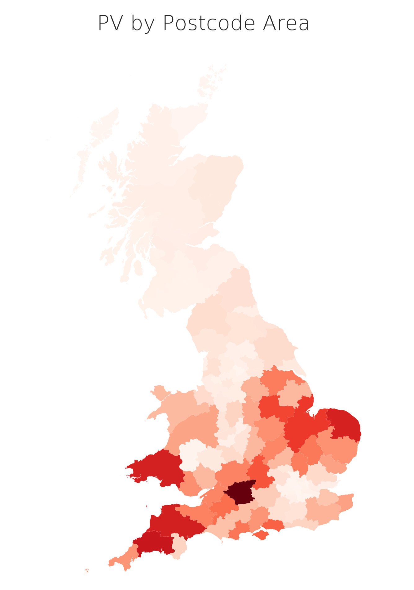
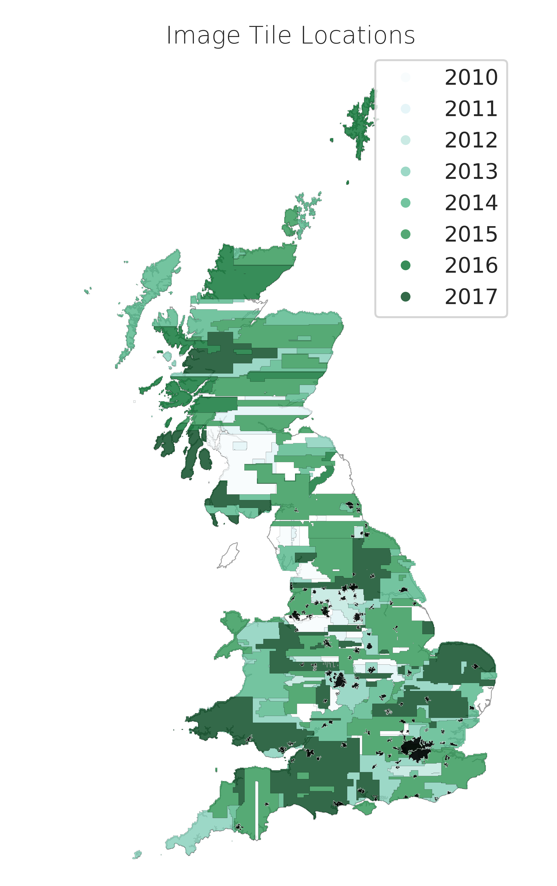
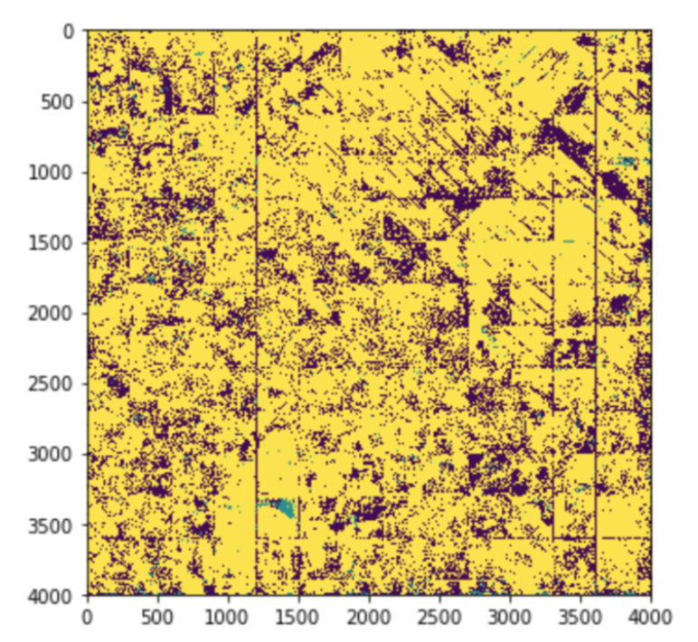
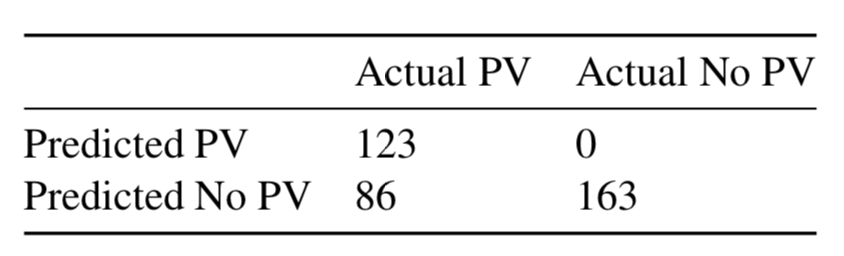
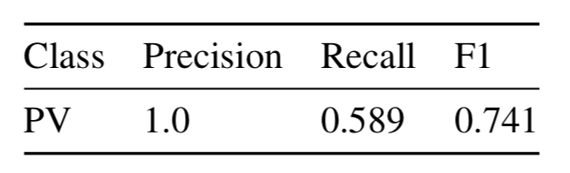

Identifying Solar PV from Aerial Imagery
Laurence Watson
Digimap GeoForum, March 2020
Co-founder at treebeard.io
Why do UK solar panels need locating?
Better forecasting
In the UK, better PV forecasts should save £1-10 million per year [1], and about 100,000 tonnes of CO2 per year.
Nowcasting
Source: Open Climate Fix
Don't we know where the PV is already?
My plan to
locate solar PV
- Get image data set of the UK
- Use Open Street Map labels for solar panels to create a training set
- Use semantic segmentation on all images to find the rest of the panels
- Write up and relax
Semantic segmentation?
Image source: CSAIL
Workflow
Ok, but where is the data?
Enter Digimap!
Aerial Digimap product, licensed from Getmapping plc.
25cm vertical ortho-photography
2TB of imagery data...
Thank you Digimap! üëè
Beautiful!
Image age
Ok, but what about the labels?
Enter Open Street Map!
At the time, 15000 labels
Now... 100,000+ !
Tools (python based)
Heavy lifting
GeoPandas is an open source project to make working with geospatial data in python easier.
Access to geospatial raster data
Also useful:
shapely, pyproj, folium
Ok, how do I do semantic segmentation...?
Enter RasterVision
An open source framework for deep learning on satellite and aerial imagery.
Thank you Azavea üëè
How to use RasterVision
See my experiment script here: https://github.com/Rabscuttler/raster-vision/tree/master/code
Setup
- Docker image
- Must use Linux, due to `nvidia-docker` not supporting other OS'
- Dependencies are a pain to manage otherwise
- GPUs mandatory - model runs can easily take 12hrs+ depending on experiment
Experiments
RasterVision takes on a lot of the work that would be reasonably boilerplate between geospatial analysis projects.
import rastervision as rv
##########################################
# Experiment
##########################################
class SolarExperimentSet(rv.ExperimentSet):
def exp_main(self, test=False):
# experiment goes here
Experiment Steps
- SETUP
- TASK
- BACKEND
- DATASET (TRAINING & VALIDATION)
- ANALYZE
- EXPERIMENT
Setup
# Connect docker filepath mounted to my data directory
base_uri = join(raw_uri, '/labels')
# Experiment label, used to label config files
exp_id = 'pv-detection-1'
# Number of times passing a batch of images through the model
num_steps = 1e5
batch_size = 8
# Specify whether or not to make debug chips (a zipped sample of png chips
# that you can examine to help debug the chipping process)
debug = True
# Split the data into training and validation sets:
# Randomize the order of all scene ids
random.seed(5678)
scene_ids = sorted(scene_ids)
random.shuffle(scene_ids)
# Figure out how many scenes make up 80% of the whole set
num_train_ids = round(len(scene_ids) * 0.8)
# Split the scene ids into training and validation lists
train_ids = scene_ids[0:num_train_ids]
val_ids = scene_ids[num_train_ids:]
Task
# ------------- TASK -------------
task = rv.TaskConfig.builder(rv.SEMANTIC_SEGMENTATION) \
.with_chip_size(300) \
.with_classes({
'pv': (1, 'yellow'),
'background': (2, 'black')
}) \
.with_chip_options(
chips_per_scene=50,
debug_chip_probability=0.1,
negative_survival_probability=1.0,
target_classes=[1],
target_count_threshold=1000) \
.build()
Backend
# # ------------- BACKEND -------------
backend = rv.BackendConfig.builder(rv.TF_DEEPLAB) \
.with_task(task) \
.with_debug(debug) \
.with_batch_size(num_steps) \
.with_num_steps(batch_size) \
.with_model_defaults(rv.MOBILENET_V2) \
.build()
# Make scenes to pass to the DataSetConfig builder.
def make_scene(id):
###
# Create lists of train and test scene configs
train_scenes = [make_scene(id) for id in train_ids]
val_scenes = [make_scene(id) for id in val_ids]
Dataset
# ------------- DATASET -------------
# Construct a DataSet config using the lists of train and
# validation scenes
dataset = rv.DatasetConfig.builder() \
.with_train_scenes(train_scenes) \
.with_validation_scenes(val_scenes) \
.build()
Analyze
# ------------- ANALYZE -------------
# We will need to convert this imagery from uint16 to uint8
# in order to use it. We specified that this conversion should take place
# when we built the train raster source but that process will require
# dataset-level statistics. To get these stats we need to create an
# analyzer.
analyzer = rv.AnalyzerConfig.builder(rv.STATS_ANALYZER) \
.build()
Experiment
# ------------- EXPERIMENT -------------
experiment = rv.ExperimentConfig.builder() \
.with_id(exp_id) \
.with_task(task) \
.with_backend(backend) \
.with_analyzer(analyzer) \
.with_dataset(dataset) \
.with_root_uri('/opt/data') \
.build()
return experiment
if __name__ == '__name__':
rv.main()
Run it!
Start up the docker container
docker run --runtime=nvidia --rm -it -p 6006:6006 \
-v ${RV_QUICKSTART_CODE_DIR}:/opt/src/code \
-v ${RV_QUICKSTART_EXP_DIR}:/opt/data \
quay.io/azavea/raster-vision:gpu-latest /bin/bash
Fire away
rastervision run local -p find_the_solar_pv.py
Pause
Recap
I want to identify solar PV from aerial imagery
- Image data from Aerial Digimap
- Training a model with 9,508 labels from Open Street Map
- Model is 'off-the-shelf' neural network
- Analysis pipeline, training and prediction with RasterVision
That would be too easy.
Creating a good training dataset is hard
Take two: train on an existing dataset
Predict on UK
Rigour?
Create a UK test set
Results on a hand-selected UK set
 That's nice, I want pictures